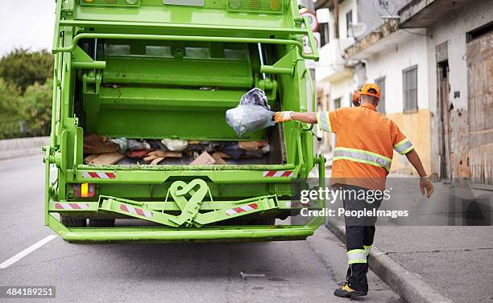
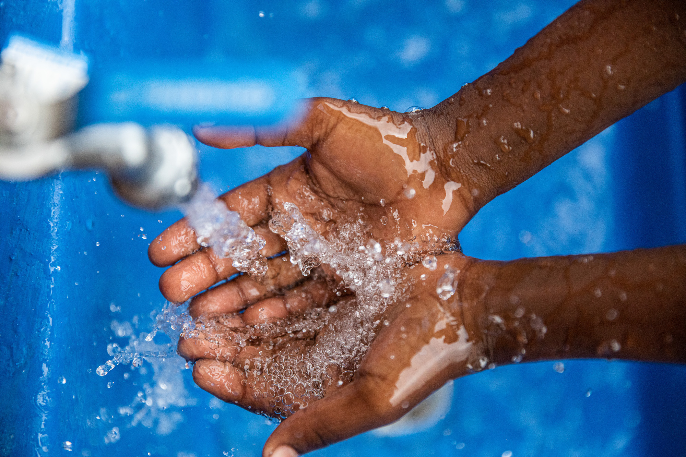
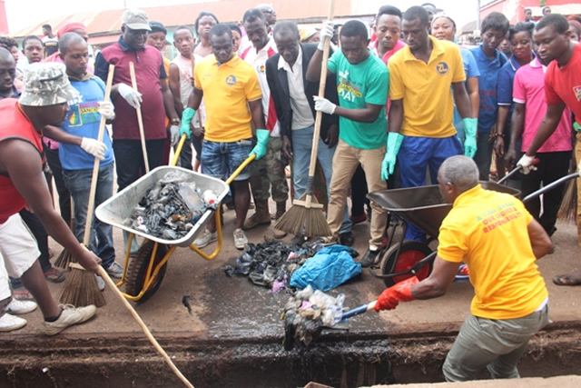
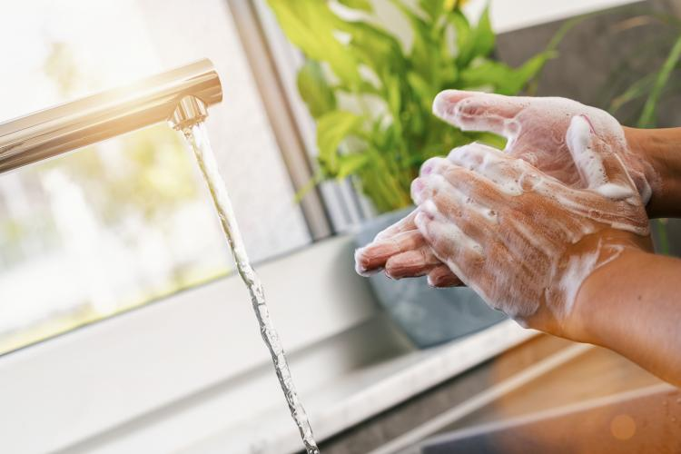

Welcome to CleanStart
Your resource for promoting **safe, effective sanitation practices** in our communities. Good sanitation is the foundation of public health.
Learn more about how proper waste disposal, clean water, and hygiene can dramatically reduce the spread of disease.
   What is Sanitation?
Sanitation is the provision of facilities and services for the **safe disposal of human excreta and sewage**. It also involves maintaining hygienic conditions through services like garbage collection and wastewater treatment.
Key Pillars of Sanitation:
- **Safe Excreta Management:** Using proper toilets and sewage systems.
- **Wastewater Treatment:** Cleaning water before it's released back into the environment.
- **Solid Waste Management:** Proper collection, disposal, and recycling of trash.
- **Hygiene Promotion:** Encouraging practices like hand washing with soap.
Get In Touch
Have questions about sanitation projects or how to get involved? Send us a message!